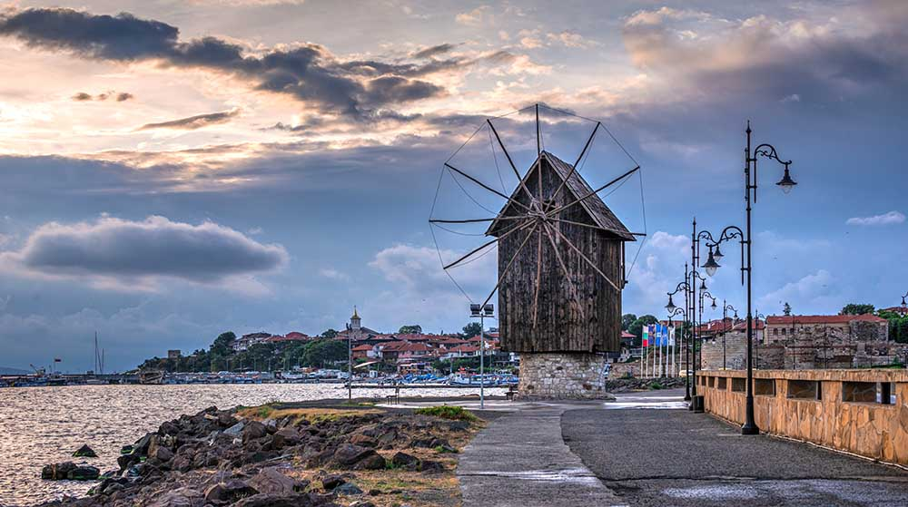
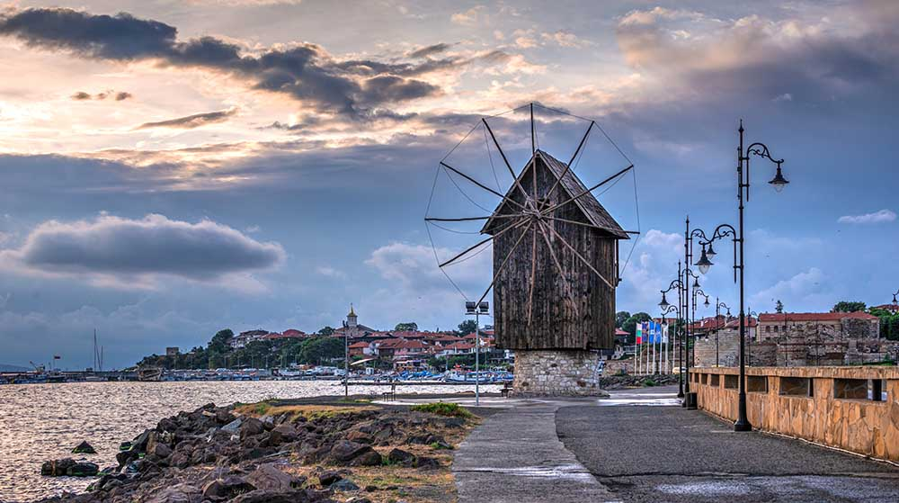

Работно време на рецепция - 00:00 - 24:00
Check-in: след 14:00 ч.
Check-out: до 11:00 ч.
Важна информация
В деня на пристигането имате следобедна закуска и вечеря, а в деня на заминаването имате закуска и обяд.
Ранно настаняване или късно освобождаване – при възможност и след запитване на рецепция.
Фитнес - 10:00 - 18:00
🍽 Ресторант и бар:
Закуска - 07:30 - 10:00
Обяд - 12:30 - 14:00
Следобедна закуска - 16:00 - 17:00
Вечеря - 18:30 - 20:30
Pool bar - 10:00 - 22:00
Важна информация за ресторанта:
Молим, спазвайте дрес кода на ресторанта

Не влизайте в ресторанта с мокри дрехи

Помнете, изнасянето на храна от ресторанта е строго забранено.

Не е позволено пълненето на бутилки

🏊 Удобства в хотела
Външен басейн
Фитнес зала
Паркинг (ограничени места)
Конферентна зала
Сейф до рецепция
Тенис на маса
🌊 Забележителности наблизо
Стария град Несебър
ЗОО БУРГАС
Архитектурен резерват "Стари поморийски къщи"
Музей на солта
Музей на меда
📶 Wi-Fi информация
мрежа : Caesar Palace
парола: caesarpalace
ℹ️ Полезна информация
Сухите пакети се поръчват до 17:00 в деня преди заминаване.
Оставените хавлии на шезлонга за повече от 1 час ще бъдат премахнати.
Резервирането на шезлонги преди откриването на басейна е ЗАБРАНЕНО.
Пушенето в стаите е забранено.
При спешен случай – набирайте 112.
Карта на хотел Caesar Palace

Карта на често търсени места в Слънчев бряг

Стария град Несебър

Често задавани въпроси
1. Как да се свържа с рецепция от стаята?
За да се свържете с рецепция, моля, натиснете 9 или 100
2. Как да получа информация за трансфера?
За да получите информация за трансфера, моля, свържете се с вашият туроператор. Рецепция не предоставя информация за трансферите.
3. Как да си купя екскурзия?
Ако имате туроператор, моля, свържете се с него. Туроператорите ви предоставят информация относно екскурзиите.
Ако нямате туроператор, рецепция с удоволствие ще ви съдейства.
4. Кога сменят спалното бельо и хавлиите?
Хавлиите се сменят всеки ден, а спалното бельо се сменя на четвъртия ден.
5. Мога ли да получа още една ключ-карта?
Не, всяка стая получава по една ключ-карта, която можете да оставяте по всяко време на рецепция.
рецепция: (+359)879969786
отдел резервации: (+359)890451200
e-mail: caesarpalace@abv.bg
к.к. Слънчев бряг, хотел Цезар Палас
Check-in: след 14:00 ч.
Check-out: до 11:00 ч.
Важна информация
В деня на пристигането имате следобедна закуска и вечеря, а в деня на заминаването имате закуска и обяд.
Ранно настаняване или късно освобождаване – при възможност и след запитване на рецепция.
Фитнес - 10:00 - 18:00
Закуска - 07:30 - 10:00
Обяд - 12:30 - 14:00
Следобедна закуска - 16:00 - 17:00
Вечеря - 18:30 - 20:30
Pool bar - 10:00 - 22:00
Молим, спазвайте дрес кода на ресторанта
Не влизайте в ресторанта с мокри дрехи
Помнете, изнасянето на храна от ресторанта е строго забранено.
Не е позволено пълненето на бутилки
ЗОО БУРГАС
Архитектурен резерват "Стари поморийски къщи"
Музей на солта
Музей на меда
мрежа : Caesar Palace
парола: caesarpalace
Сухите пакети се поръчват до 17:00 в деня преди заминаване.
Оставените хавлии на шезлонга за повече от 1 час ще бъдат премахнати.
Резервирането на шезлонги преди откриването на басейна е ЗАБРАНЕНО.
Пушенето в стаите е забранено.
При спешен случай – набирайте 112.

1. Как да се свържа с рецепция от стаята?
За да се свържете с рецепция, моля, натиснете 9 или 100
2. Как да получа информация за трансфера?
За да получите информация за трансфера, моля, свържете се с вашият туроператор. Рецепция не предоставя информация за трансферите.
3. Как да си купя екскурзия?
Ако имате туроператор, моля, свържете се с него. Туроператорите ви предоставят информация относно екскурзиите.
Ако нямате туроператор, рецепция с удоволствие ще ви съдейства.
4. Кога сменят спалното бельо и хавлиите?
Хавлиите се сменят всеки ден, а спалното бельо се сменя на четвъртия ден.
5. Мога ли да получа още една ключ-карта?
Не, всяка стая получава по една ключ-карта, която можете да оставяте по всяко време на рецепция.
рецепция: (+359)879969786
отдел резервации: (+359)890451200
e-mail: caesarpalace@abv.bg
к.к. Слънчев бряг, хотел Цезар Палас